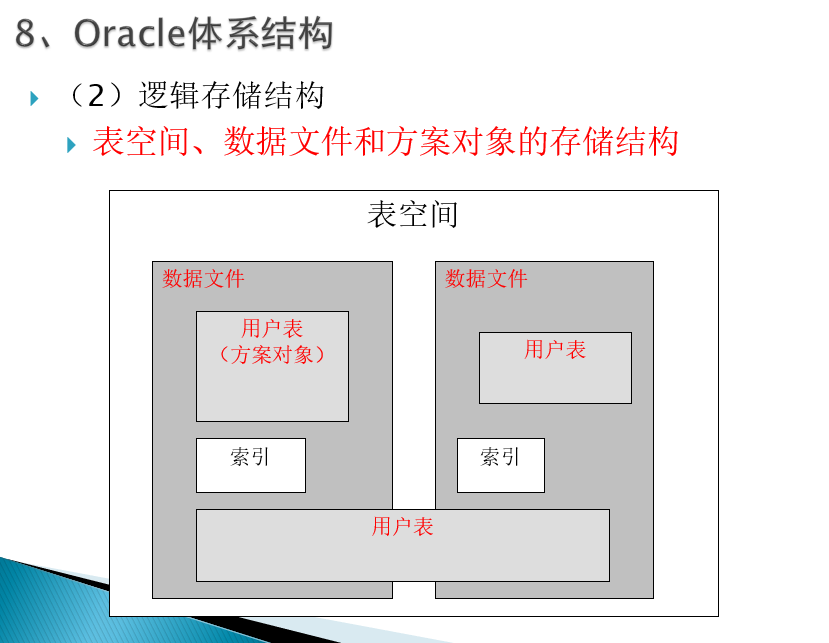
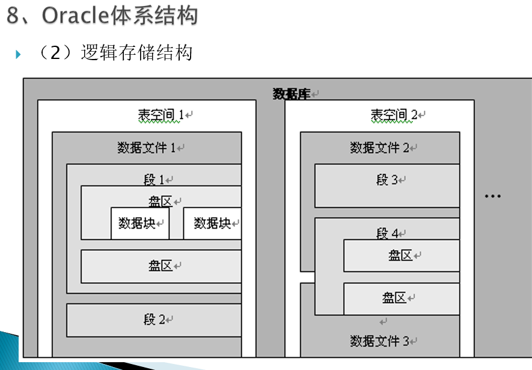

1. Oracle常用工具及默认用户
1.1 常用工具
1.1.1 常用系统管理工具
- 数据库配置助手（DataBase Configuration Assistant，简称DBCA）是Oracle提供的一种图形化管理工具，能够：
创建数据库
配置数据库选项
删除数据库
管理数据库模板
网络配置助手(OracleNet Configuration Assistant 简称ONCA)：
监听程序配置
本地网络服务配置
1.1.2 常用数据库管理工具
SQLPlus工具的使用
方法一：通过开始 菜单“SQL Plus” 。
方法二：通过DOS命令
点击“开始”—>“运行”—>输入“cmd命令”—>进入DOS环境下执行SQLPLUS命令也可以打开SQL*Plus工具。
◦（1）SQLPLUS [用户名]/[密码][@主机字符串][AS SYSDBA|SYSOPER]
◦（2）SQLPLUS 用户名/密码@主机名|主机IP地址: 端口号/数据库实例名 [AS SYSDBA|SYSOPER]
- SQL Developer
SQL Developer允许用户创建并维护数据库对象，查看和维护数据，编写、维护并调试PL/SQL代码。这款工具以其简洁整齐的图形用户界面大大简化了开发工作。
注意：如果Oracle SQL Developer的SQL工作表不能正常编辑,无法使用回车键,上下左右键:
打开菜单并选择 工具-首选项-加速器-加载预设-Default
1.2 默认用户
SYS：该用户被默认创建并授予DBA角色，它是Oracle数据库中权限最大的管理员账号。
SYSTEM：被默认创建并授予DBA角色权限仅次于SYS。该用户创建和管理数据库中可显示管理信息的表或视图，以及被Oracle数据库应用和工具使用的各种数据库对象。
SYSMAN：该用户是企业管理的超级管理员账号，该账号能够创建和修改其他管理员账号，同时也能管理数据库实例。
DBSNMP：是Oracle数据库中用于智能代理（Intelligent Agent）的用户，用来监控和管理数据库相关性能。如果停止该用户，则无法提取相关的数据库信息。
例1.2 以system用户登录数据库。
◦ SQLPLUS
◦ SQLPLUS system
◦ SQLPLUS system/abcdef
◦ SQLPLUS system/abcdef@orcl
例1.3 以sys用户登录数据库。
◦SQLPLUS sys/abcdef AS SYSDBA
◦SQLPLUS sys/abcdef@orcl AS SYSOPER
例1.4 不使用已定义的主机字符串，直接指定要连接的主机名、端口号和数据库实例。
◦SQLPLUS system/abcdef@localhost:1521/orcl
例1.5 在SQL*Plus环境下，使用CONNECT命令将当前用户分别切换到system用户或sys用户。
CONNECT system/abcdef@orcl
CONNECT sys/abcdef@orcl as sysdba
1.3 Oracle体系结构
1.3.1 物理存储结构
概念：Oracle数据库的物理存储结构是从物理组成的角度分析一个数据库在存储介质上的实际构成，它是由操作系统组织和管理的，是Oracle数据库的外部存储结构。
Oracle数据库主要包括4种类型的文件：
- 数据文件
- 日志文件
- 控制文件
- 初始化参数
1.3.2 逻辑存储结构
概念：在逻辑上定义了一组存储单元，以逐层细分的思想将数据库对象占用的存储空间依次划分为表空间、段、盘区和数据块。
- 表空间是最大的逻辑存储单元，一个数据库从逻辑结构上划分就包括多个表空间；
- 一个表空间继续划分为多个段；
- 一个段又被划分为多个盘区，盘区是最小的磁盘空间分配单元；
- 一个盘区又被划分为多个数据块，数据块是Oracle最小的数据读写单元。
- 表空间（tablespace）是Oracle数据库中最大的逻辑存储结构 。
- 逻辑结构上的表空间与物理结构上的数据文件是有关联的。这种关联是：
- 数据库中的一个表空间至少包含一个或多个数据文件，而一个数据文件只能属于一个表空间。
- 一个表空间的大小就等于它包含的所有数据文件大小之和。

